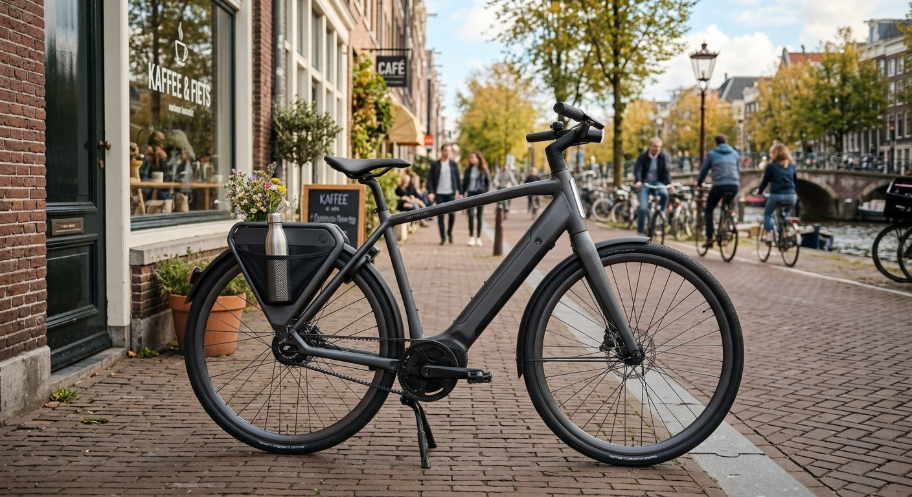

¡Vamos a pedalear!
Descubre Medellín de una manera diferente. Alquila tu bicicleta con nosotros y disfruta de nuevas aventuras. Estamos aquí para ayudarte. Encuéntranos aquí.
Conoce nuestros servicios¿Quiénes somos?
En Rueda Libre somos apasionados por el ciclismo, la aventura y la libertad de recorrer nuevos caminos. Nos dedicamos al alquiler de bicicletas para que más personas puedan disfrutar de una forma de transporte saludable, económica y amigable con el medio ambiente.
Queremos ofrecerte una experiencia cómoda, segura y divertida, ya sea que quieras recorrer la ciudad, hacer ejercicio o explorar nuevos lugares. Nuestro objetivo es que cada recorrido sea una gran experiencia.
¡Con Rueda Libre, cada camino es una nueva aventura!
Nuestros servicios
Tenemos diferentes opciones para que puedas disfrutar de la bicicleta según tus gustos y necesidades.

Alquiler de bicicletas urbanas
Disfruta de la ciudad a tu propio ritmo con nuestras bicicletas urbanas. Son ideales para paseos, desplazamientos cotidianos y recorridos por parques o zonas turísticas. Consulta la disponibilidad antes de alquilar.
Alquiler de bicicletas de montaña
Explora senderos y disfruta de la naturaleza con nuestras bicicletas de montaña. Son una excelente opción para quienes buscan aventura y actividad física. ¡Anímate a conocer nuevos caminos!
Alquiler de bicicletas urbanas
Disfruta de la ciudad a tu propio ritmo con nuestras bicicletas urbanas. Son ideales para paseos, desplazamientos cotidianos y recorridos por parques o zonas turísticas. Consulta la disponibilidad antes de alquilar.
Alquiler de bicicletas urbanas
Disfruta de la ciudad a tu propio ritmo con nuestras bicicletas urbanas. Son ideales para paseos, desplazamientos cotidianos y recorridos por parques o zonas turísticas. Consulta la disponibilidad antes de alquilar.
¿Cómo alquilar?
Alquilar una bicicleta en Rueda Libre es muy fácil. Solo tienes que seguir estos cuatro pasos:

- Elige tu bicicleta: selecciona la bicicleta que mejor se adapte a tu recorrido.
- Consulta la disponibilidad: pregúntanos por los modelos, las tarifas y los horarios.
- Haz tu reserva: indícanos la fecha y el tiempo durante el cual quieres alquilar la bicicleta.
- Recoge tu bicicleta: verifica los requisitos con nuestro equipo y prepárate para disfrutar del recorrido.
¡Así de fácil es comenzar tu aventura con Rueda Libre!
Beneficios de alquilar con nosotros
- Cuida tu salud: disfruta de la actividad física mientras recorres la ciudad.
- Ahorra dinero: alquila una bicicleta solo durante el tiempo que la necesites.
- Descubre nuevos lugares: disfruta de Medellín y de sus alrededores de una manera divertida y amigable con el medio ambiente.
Encuéntranos
¿Estás listo para pedalear? En Rueda Libre queremos ayudarte a encontrar la bicicleta ideal para tu próxima aventura.
Dirección: Cra. 70 #13A 25, Belén, Medellín, Antioquia
Correo electrónico: ruedalibre@gmail.com
¿Tienes alguna pregunta? Escríbenos para consultar las bicicletas disponibles y organizar tu próximo recorrido.